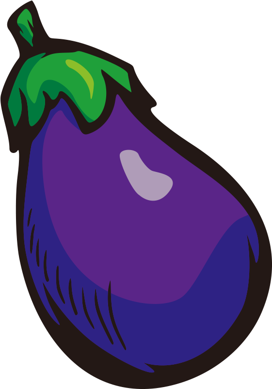

Beranda
Tentang TerongPedia
Varian TerongPedia?
Mengapa TerongPedia?
TerongPedia
Varian di TerongPedia
Terong Ungu
Terong Belanda
Terong Bulat
Terong Telunjuk
Terong Pipit
Kenapa harus TerongPedia?
Pertanian Organik yang Tersistem
Harga Bersaing
No Bad Chain Distribution
Kesejahteraan Petani Lokal